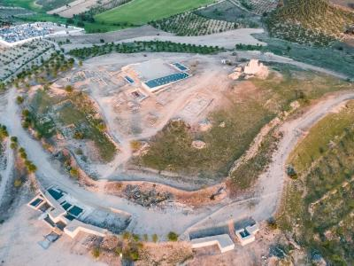
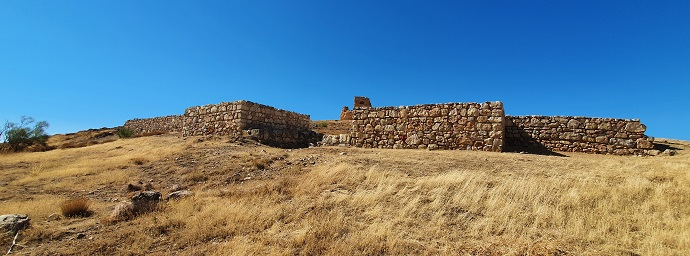
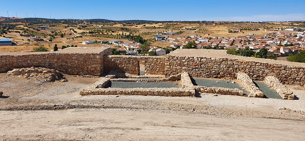
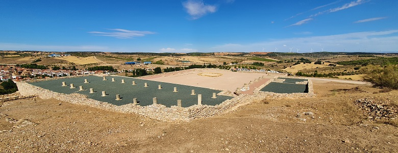
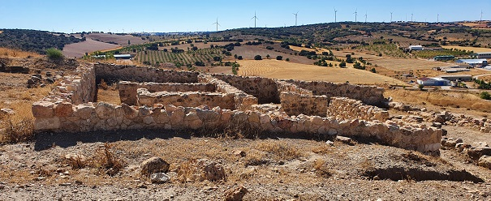
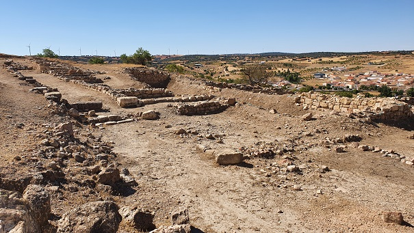
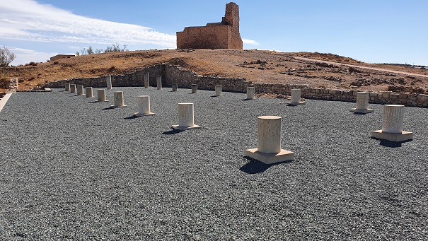
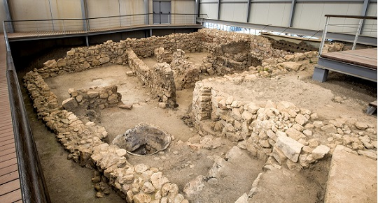

L I B I S O S A

Foto: Parque Arqueológico de Libisosa
En Lezuza, Albacete, se halla la colonia romana de Libisosa
Foroaugustana mencionada por Plinio el Viejo, fundada sobre un oppidum
oretano registrado por Ptolomeo.
Los materiales hallados se remontan al Bronce Final.
Se ha hallado parte de un barrio ibero. Libisosa sufrió los efectos, entre
los años 82 y 72 a.e.c de la primera guerra civil romana, conocida como
guerra de Sertorio. Libisosa era indispensable para asegurar el paso
desde la Meseta hacia Andalucía y de Levante a Extremadura y Portugal, y
resultaba clave para la conquista de la Península Ibérica.
|
De época romana destaca la muralla datada en el siglo. I a.e.c. Hasta
el momento se conocen tres puertas de acceso, al Sur, Noroeste y Norte, e
indicios de una cuarta.


La construcción de la muralla tardorrepublicana, provocó la destrucción de
la barriada iberorromana.
En el Foro se conservan huellas de su
pavimentación y cimentación de un doble corredor porticado de 9 columnas
cada uno, y de pedestales de estatua en su zona meridional. Bajo el foro
se encontraron restos de una fase anterior tardorrepublicana, destacando
un pozo ritual ibérico.
A finales del siglo I y principios del II , sufrió una remodelación y se
construyó una fuente monumental. Al oeste del foro, se han descubierto los
restos de una casa con dos fases: una ibera y otra romana.
Junto al foro se halla la basílica, de planta rectangular y la curia.



|
|
|
En el yacimiento también se conservan los restos de un complejo
religioso-político de época medieval.

En diciembre de 2020, encuentran una treintena de
armas romanas de enorme valor, cascos, espadas, puñales y restos de
escudos en buen estado de conservación.
En septiembre de 2021, encuentran un templo iberorromano. Es la gran
joya de este yacimiento. El templo presenta un «nivel de conservación
excepcional visible en sus muros de adobe», según el director de la
excavación, Héctor Uroz, y en él se han hallado también objetos
litúrgicos y vajilla romana. El templo se destruyó en un momento previo
a la devastación generalizada que sufrió Libisosa en época de las
guerras sertorianas, años 82 y 72 a.e.c. Foto:
www.lezuza.es

En octubre de 2021 el yacimiento es declarado
Parque Arqueologico.
En la campaña arqueológica de septiembre de 2022 se halla un torreón de
la puerta Este de la muralla romana.
En septiembre de 2023 la campaña de excavaciones de este año deja a la
luz el segundo de los torreones del acceso principal y parte del lienzo
de la muralla romana que delimita, junto a la hallada precisamente el
pasado año, su acceso a este yacimiento.
Las Jornadas de Recreación Histórica Iberorromanas se
celebran en septiembre.
ALBACETE
ROMANO
|